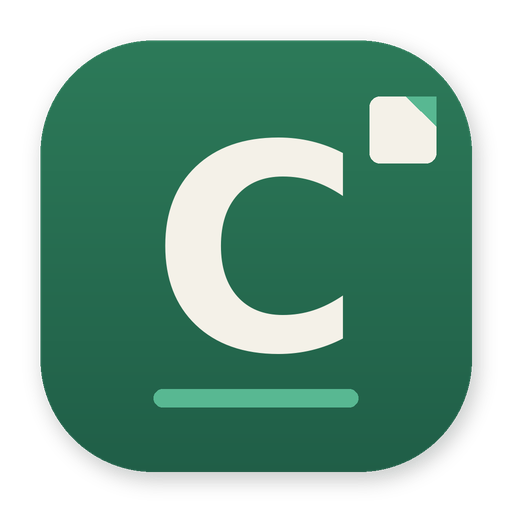

界面重构
启动中心、菜单、工具栏、对话框与设置统一视觉语言，减少干扰，保留文档优先的工作区。
界面规范 →
Chenyi Office（胡辰逸定制版）为 Windows 10 / 11 64 位重新设计： 统一的界面语言、三段式标签页、专属启动动画，以及发布即生效的强制更新机制。
阶段目标全部公开，可在仓库中跟踪。
许可、文档、站点、发布流程、更新清单与公告校验。
Windows x64 安装包、启动器、密码欢迎页、品牌资产、强制更新与公告通道。
启动中心、标签页、菜单、工具栏、对话框与设置的视觉重构。
公开测试、本地化、稳定性打磨与正式版本。
安装包与更新清单统一通过 GitHub Releases 发布。
Windows 10 / 11 64 位安装包与发行说明。v0.4.0 已发布：深度界面改版，首次安装需要密码，更新不再需要。
Announcements版本发布、维护通知与重要变更，全部集中在这里。
Issues提交缺陷或功能建议；使用问题请前往 Discussions。
latest.json。一旦发布新版本，旧版本会在下次启动时被强制更新页面拦截，
没有“稍后提醒”或跳过入口，更新页也不提供退出按钮。请保持网络连接以完成更新。
启动时还会读取仓库中的 announcements.json：有新公告会先展示，点击“继续”后进入应用。
首次安装需要密码，密码由发布者单独提供，不在此页面公开；后续更新自动安装，不再询问密码。